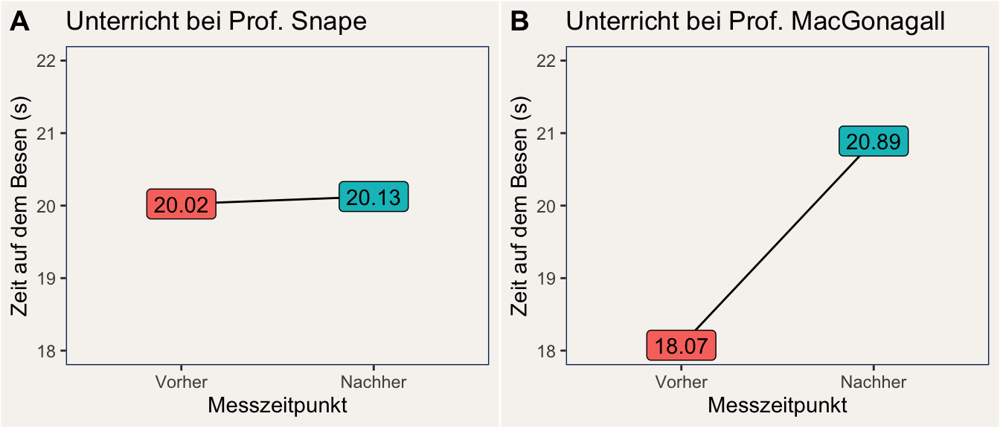

In der Psychologie reden wir häufig davon, dass bestimmte Ergebnisse singifikant sind. Doch was bedeutet das eigentlich wirklich? Starten wir mit einem Rätsel in der Welt der Zauberschule Hogwarts. Prof. Snape und Prof. MacGonagall geben beide jeweils eine Stunde Besenflug-Unterricht. Auf der Abbildung unten ist die durchschnittliche Zeit (in Sekunden) dargestellt, die sich Schüler:innen jeweils vor und nach der Unterrichtsstunde auf dem Besen halten konnten.
Bei welcher Lehrperson führt der Unterricht zu einer signifikanten Verbesserung?

Die Antwort dürfte auf den ersten Blick irritieren: Es ist Snape, obwohl der Vorher-Nachher Unterschied deutlich kleiner ist, als bei MacGonagall. Warum das so ist, und was das bedeutet, ist das Thema dieses Skripts: Wir befassen uns mit Signifikanz und Effektstärken.
Schauen wir uns zunächst an, was man unter signifikant verstehen kann. Der Duden listet drei Definitionen von Signifikanz, von denen zwei für uns relevant sind:
signifikant (bildungssprachlich) | In deutlicher Weise als wesentlich, wichtig, erheblich erkennbar signifikant (Statistik) | Zu groß, um noch als zufällig gelten zu können
In der Praxis der empirischen, sozialwissenschaftlichen Forschung kann man noch eine deutlich genauere Definition von statistischer Signifikanz geben:
signifikant (Statistik) | Ein beobachteter Effekt gilt als signifikant, wenn die Wahrscheinlichkeit, einen Effekt der gemessenen Größe zu beobachten, unter der Annahme der Nullhypothese (= die Effektstärke ist Null) kleiner als 5 % ist.
Diese Definition ist eigentlich nicht allgemeingültig, beschreibt aber die praktische Verwendung des Begriffs “signifikant”.
Etwas flapsiger ausgedrückt könnte man sagen, ein signifikanter Effekt ist ein Effekt, der wahrscheinlich nicht Null ist.
Wenn wir nun die erste Duden-Definition und die sozialwissenschaftlich-statistische Definition des Signifikanz-Begriffs gegenüberstellen, wird deutlich, dass hier eine Quelle für Misverständnisse liegt: In der Duden-Definition geht es um etwas, das “wesentlich, wichtig, erheblich” ist, während die sozialwissenschaftliche Definition lediglich sagt: “nicht null”.
Ein Effekt, der nicht null ist, ist nicht automatisch wesentlich, wichtig, oder erheblich.
Statistische Signifikanz ist eine notwendige Bedingung für Bedeutsamkeit, denn ein Effekt, der Null ist, kann kaum wichtig sein - obwohl es auf einer höheren Ebene durchaus sehr bedeutsam sein kann, herauszufinden, dass ein bestimmter Effekt nicht bedeutsam ist. Stat. Signifikanz ist aber keine hinreichende Bedingung für Bedeutsamkeit: Ein kleiner Effekt, der mit Sicherheit verschieden von Null ist, kann in der Praxis zu vernachlässigen sein. Würde zum Beispiel ein Impfstoff für Covid-19 gefunden, der die Ansteckungsrate statistisch signifikant um 0,01 % verringert, würde dieser Impfstoff wohl nicht viele Abnehmer:innen finden.
Das hat einen einfachen Grund: In den von uns simulierten Daten hat Snape 5000 Schüler:innen unterrichtet, während MacGonagall nur 10 Schüler:innen in ihrer Obhut hatte. Tatsächlich beträgt der wahre (von uns simulierte) Lerneffekt bei Snape 0,1 Sekunden, d.h. im Durchschnitt kann sich ein:e Schüler:in nach einer Stunde Flugunterricht bei Snape nur 0,1 Sekunden länger auf dem Besen halten, als zuvor. Der Unterricht bei MacGonagall ist deutlich effektiver: Eine Stunde bei ihr führt im Durchschnitt zu einer Verbesserung um 3 Sekunden.
Wegen der großen Stichprobe bei Snape können wir den sehr kleinen Lerneffekt in Snapes Gruppe mit großer statistischer Sicherheit festellen: Der Vorher-Nachher-Unterschied wird in einer linearen Regression auf \(\hat{\beta} = 0.103\) Sekunden mit einem Standardfehler von \(SE=0.02\) geschätzt. Das ergibt eine Teststatistik von \(t(9998)=4.21\), womit wir errechnen können, dass wir ähnliche Daten nur mit einer Wahrscheinlichkeit unter 0,1 % (\(p<.001\)) erhalten würden, wenn der Lerneffekt bei Snape 0 wäre. Der Effekt ist damit statistisch signifikant.
Anders sieht es bei Prof. MacGonagall aus. Der Effekt wird bei ihr zwar auch recht gut geschätzt (\(\hat{\beta} = 2.816\) Sekunden), allerdings ist die Schätzung wegen der kleinen Stichprobe viel unsicherer, was sich in einem großen Standardfehler von \(SE=2.59\) und geringem t-Wert von \(t(18)=1.09\) niederschlägt. Damit schätzen wir die Wahrscheinlichkeit für ein solches oder ähnliches Ergebnis unter Annahme eines Null-Lerneffekts (\(\beta = 0\)) auf etwa 29 % (\(p = .291\)). Das reicht nicht aus, damit wir wir davon ausgehen können, dass der Unterricht bei MacGonagall überhaupt wirkt.
Die statistische Signifikanz gibt uns Hinweise darauf, ob ein Effekt zufällig oder systematisch ist. Wenn die Wahrscheinlichkeit eines Zufallsbefunds zu hoch ist (wenn der p-Wert größer als eine bestimmte Schwelle - in der Regel 0,05 - ist), dann ist es in der Regel nicht ratsam, den Effekt weiter zu interpretieren. Im anderen Fall aber, wenn das Ergebnis statistisch signifikant ist, sollten wir an dieser Stelle nicht aufhören, sondern uns die Effektstärke anschauen und überlegen, welche Bedeutung unser Befund hat.
Es gibt viele unterschiedliche Effektstärke-Maße - die genaue Verwendung hängt von den vorliegenden Daten und dem verwendeten statistischen Verfahren ab.
Eine zentrale Eigenschaft von Effektstärke-Maßen ist die Standardisierung. Nur standardisierte Effektstärken eignen sich, um Effekte zu vergleichen.
Bekannte Effektstärke-Maße, mit denen Psycholog:innen häufig zu haben, sind:
Korrelation: Gibt die Stärke des linearen Zusammenhangs von zwei kontinuierlichen Variablen an. Beispiel: Die Korrelation zwischen Alter und Höhe der Ersparnisse beträgt \(r = .38\) (erfundenes Beispiel). Die Korrelation reicht von -1 (perfekter gegensätzlicher Zusammenhang) bis +1 (perfekter Zusammenhang).
Cohen’s d: Gibt die Stärke des Unterschieds zwischen zwei Gruppen in der Einheit Standardabweichungen an.
Schauen wir uns nun einmal Cohen’s d für unser Beispiel des Flugunterrichts an. In der folgenden Tabelle sehen wir Cohen’s d für unsere beiden Lehrpersonen und die untere und obere Grenze des 95 %-Konfidenzintervalls (KI).
| Lehrperson | Cohen’s d | KI untere Grenze | KI obere Grenze |
|---|---|---|---|
| Snape | \(0.08\) | \(0.04\) | \(0.08\) |
| MacGonagall | \(0.51\) | \(-0.41\) | \(1.41\) |
Hier sollten uns ein paar Dinge auffallen:
Das Cohen’s d für Prof. MacGonagall ist ein anderer Wert, als der für sie geschätzte \(\beta\)-Koeffizient in der oben berichteten linearen Regression. Das liegt daran, dass Cohen’s d die Varianz der betrachteten Größe (in diesem Fall der Flugzeit) mit einberechnet. In MacGonagalls Fall gab es eine große Varianz in der Leistung der Schüler:innen, deshalb wird das dem unstandardisierten Unterschied von ca. 2,8 Sekunden ein standardisierter Unterschied von ca. 0,5 Standardabweichungen.
Die geschätzte Effektstärke für Prof. MacGonagall ist mehr als sechs mal so groß wie für Prof. Snape - aber das dazugehörige Konfidenzintervall ist deutlich breiter und schließt null mit ein.
Fassen wir zunächst die Fakten zusammen:
Eine Bewertung ergibt nur für das Ergebnis der auf Snape bezogenen Analyse Sinn. Ich denke dazu: Eine Verbesserung der Flugleistung um 0,1 Sekunden / 0,08 Standardabweichungen beeindruckt mich nicht. Meine Bewertung lautet daher:
Flugunterricht bei Prof. Snape führt zu einer statistisch signifikanten, aber praktisch unbedeutenden Verbesserung der Flugleistung von Zauberschüler:innen.
Auch wenn Effektstärke und Signifikanz unterschiedliche Konzepte sind, gibt es einen Zusammenhang. Der wurde schon im Skript zur Interpretation von Befundmustern angeschnitten. Sie sind verbunden über das Konzept der statistischen Power.
Power | Die Wahrscheinlichkeit, mit der wir in einem einzelnen Test korrekterweise die Nullhypothese zurückweisen, wenn es tatsächlich einen Effekt gibt; d.h. die Wahrscheinlichkeit für richtig-positive Befunde.
Die Power eines statistischen Tests is abhängig von drei Faktoren:
Das Alpha-Niveau, das wir zugrunde legen. In vielen sozialwissenschaftlichen Feldern ist es eine soziale Norm, ein Alpha-Niveau von 0,05 zugrunde zu legen, d.h. eine Wahrscheinlichkeit von 5 % für ein falsch-positives Ergebnis zu akzeptieren. Je kleiner das Alpha-Niveau, desto kleiner wird auch die Power.
Die Stichprobengröße, die unserer Untersuchung zugrunde liegt. Je größer die Stichprobe, desto genauer werden unsere Schätzungen. Mit steigender Stichprobengröße steigt die Power.
Die wahre Effektstärke. Je größer der Effekt ist, desto wahrscheinlicher ist es, dass wir ihn schon in einer kleinen Stichprobe zuverlässig entdecken können.
Was heißt das nun? Große Effekte führen eher zu statisch signifikanten Testergebnissen, als kleine Effekte. Aber mit steigender Stichprobengröße werden zunehmend auch immer kleinere Effekt statistisch signifikant. Das geht so weit, bis die reine statistische Signifikanz praktisch fast keine Relevanz mehr hat, weil auch winzig kleine Effekte zu signifikanten Ergebnissen führen. Deshalb ist es wichtig, bei der Interpretation statistischer Tests die Effektstärke zu beachten.